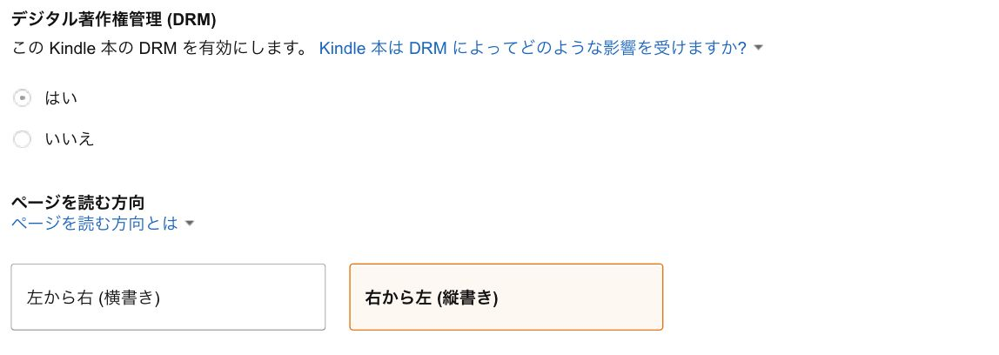

| MacとPagesを使ってKindle出版 | |
| Ayu | |
| (2019) | |
MacとPagesを使ってKindle出版
Ayu
最初に
この度は本書のご購入ありがとうございます。
この本では、MacとPagesを使用し、極力純正のアプリだけを使って、KDP(Kindle Direct Publishing、以下KDP)Kindleを出版するための手順を紹介していきます。
もちろん今お読みになっているこの本も、ここに書かれている手順の通りに行い、本を作り、出版しております。
ある意味、この本ができるまでの進捗本のような感じですが、外出先や自宅のデスク、一息ついてのソファや寝起きのベッドの上など、また様々な場所でスマホやタブレット端末を使い、書いて完成させました。
なぜこのような本を出版したのかと言いますと、私もかつてKDPで本を出版をしていました。
私自身、人生の中で本を出すことはやってみたいことの一つだったのですが、あっさりとそれが叶ってしまったのと、本を書いているうちに本当にやりたいことではなかったことに気づき、本を書くことの意欲がなくなってしまい、そこからパタリとKindleの出版を辞めてしまいました。
今ではその全ての本は絶版として、配信を停止していますが、本を出版することは自分にとっては、現代の技術によって簡単に叶ったわけです。
しかし、「僕と同じように電子書籍で出版したい人がいるのでは」と、ある日思い始めました。
KDPでの出版は「KDP難民」と言われているほどで、「電子書籍にする知識」が思った以上に必要であり、その知識が高いハードルので、そこで挫折をしてしまう人が多いようです。
私は本を書く技術をお教えすることはできませんが、電子書籍で出版する知識はお教えすることが出来ると考えて、今自分の持っているKDPの出版方法を本にして活かすことを決意しました。
本を書いていない私が持っていても活用されない知識なのですから、役に立ててくれる方のために公開するのが正しいあり方だと私は思っております。
少しでも皆様のお役に立ててれば幸いです。
話を戻しまして、現実問題、まだKindle出版は敷居が高いと言いますか、「やり方が難しそう」というイメージが強いようです。
実際に「KDPをやり始めると、底の見えない沼にハマる」と言われているほど、作業の多さにびっくりされる方も多いようです。
私自身も全くの未経験からのスタートでしたが、一週間ほど過酷な試行錯誤をして、本当に手こずりながら覚えましたが、手順さえわかってしまえば、誰でもできてしまいます。
なので、この本の大黒柱は、
「いかに簡潔にして、しっかとした手順を踏んで理解してもらえるか」
このことだと思っております。
我々はリモコンを簡単に扱うことができますが、その仕組みは複雑なものです。
また自動車も様々なカラクリで動いていますが、実際にそのカラクリを知らなくても、車の運転は免許を取得してしまえば運転は出来てしまいます。
難しい仕組みは二の次で、難しいことを学びたい人は学べばいい、まずは誰もが運転できるシステムを作る必要がある、と考えたわけです。
またこの本は縦書き横書き両方対応しております。
なので、最初は「縦書き」の説明で、次に横書きの説明をしていきます。
そしてKindleの本が書けてしまえば、iBookの本も簡単に出来てしまうので、オマケ要素に近いですが、iBookの作成方法についても簡単に説明しています。
また本の説明文の書き方のちょっとしたコツや、値段設定に関するコツに関することも書かれていますので、ぜひ参考にしてみてください。
では早速ですが、本題に移っていきましょう。
必ず用意して欲しいもの
電子書籍を作っていく際に必要になるものをまず紹介していきます。
縦書きと横書き両方必要になるものから、縦書き限定のものもありますので見ていきましょう。
・KDPアカウント
KDPはKindle出版をするためには必要なものなので必ず登録をしましょう。
その登録方法をご紹介していきます。
とは言っても、非常に簡単なので、ここはサックと説明して終わりたいと思います。
https://kdp.amazon.co.jp/ja_JP/
こちらからアクセスすることができます。
または「KDP Amazon」で検索しても出てきます。
KDPはAmazonのアカウント持っておくと、個人情報などの入力を省くことができるので、Amazonのアカウントを作っておくことをお勧めします。
記入する項目は少なく、住所や氏名、電話番号、銀行口座と税務に関することです。
本の売上などを受け取る方法がいくつかありますが、銀行振込が一番確実なので、読者の皆さんが普段利用している銀行口座の入力をしましょう。
またここでの登録の際に、納税に関する情報も入力しますが、ここの話は少々長くなるので、別の章の「納税に関すること」でご説明しますので、今は忘れてもらって構いません。
納税に関することは、既にアカウントを持っている方でも後で変更も可能なので、今は先に進みましょう。
・Pages(縦書き/横書き)
Apple純正の書類作成アプリになります。
今回メインに使うアプリはこれになりますので、必ず用意してください。
PCに入っていないという方は、Appストアから無料でダウンロードできるので、必ずしておいてください。
Pagesを使う利点としましては、iCloudを利用することができるのでいつでもどこでも、作業ができることです。
冒頭でも少し触れましたが、私はデスクでの作業だけでは考えが凝り固まってしまうので、その時はMacからiPadに変えて、場所を変えて作業をしています。
またちょっとした移動の間にもiCloudに保存しておけば、自宅でしていた作業にアクセスできますし、オフライン環境になる場合でも、データをiPhoneやiPadに移動しておけば、持ち運びが簡単なのでお勧めです。
・Kindle Previewer(縦書き/横書き)
https://kdp.amazon.co.jp/ja_JP/help/topic/G202131170
こちらはKDPが公式でリリースしているアプリになります。
自分の書いた本がどのように表示されるかなどの確認ができる仕様で、本を出版前に確認ができるので、非常に重宝するアプリになります。
・でんでんコンバーター(縦書き限定)
https://conv.denshochan.com/
縦書き限定ですが、電子書籍のファイル「EPUB」にするために利用させてもらうサイトになります。
右記のURLをクリックできない方は「でんでんコンバーター」と検索してみてください。
これから説明していく文章の書き方などは、目次の作成から段落を空けての文章の打ち込みなど、このでんでんコンバーターに則ったやり方になりますので、必ずでんでんコンバーターにアクセスできるようにしておいてください。
・Dropboxアカウント(縦書き限定)
こちらはでんでんコンバーターとリンクさせて、本の中に画像を挿入する際に使いますので、用意しておりてください。
画像の挿入のやり方は後ほど説明いたします。
では、縦書きの説明から見ていきましょう。
縦書きのkindle本を書く
では早速ですが縦書きで本を書いていきましょう。
結論から先に言いますが、流れを説明します。
Pagesで本を書いていく、その際、でんでんコンバーターに則った文章作成をする
↓
テキストファイルで書き出す
↓
書き出したテキストファイルを、でんでんコンバーターでEPUBに変換する
↓
Kindle Previewerで本の確認
↓
KDPにアップロード
このようになっております。
縦書きの最もの不安でもある、
「本当に縦書きになるのか」
「自分の思い通りの文章を書けるか」
ということです。
例えば、しっかりと行を空けて改行したい場合や、画像を挿入したいなど様々ありますが、自分の思い通りに文章が作成できなくてはいけません。
読者にとって、しっかりと読みやすいように文を配置するのもライターの役目ですから、しっかりと行わなければなりません。
Pagesは縦書きも対応するようになり、より使い勝手も良くなったのですが、実は大きな問題が一つあります。
Kindle用でEPUBの書き出しをしても縦書きにならない
タイトル通り、なぜかと言いますと、Pagesでは縦書きは出来るようになりましたが、縦書きに打ち込んでいっても、出力されたEPUBファイルは横書きになっているからです。
しかもこれはKindle限定の問題で、iBookなどでは問題なく縦書きになりますが、Kindleでは何故か横書きになってしまいます。
この辺りのシステム的なことはわからないのですが、縦書き入力をしても、EPUBでは横書きになっているので、Pagesの縦書きは使用できないということになります。
ではどうするのか。
その方法は縦書きの場合は、Pagesで打ち込んだファイルはテキストファイルで書き出します。
テキストファイルであれば、縦書きも横書きも関係のない状態なので、テキストファイルを使用する理由なのです。
なので、何故でんでんコンバーターを使用するのかと言いますと、縦書きに対応させるために「テキストファイル→EPUB」という方法をとるためであります。
入力の際は縦書き、横書きどちらでも良い
右のことから関係して、Kindleの場合は縦書きで書いても、結局EPUBでは横書きになってしまいますので、文章を打ち込むのはどちらでも問題ありません。
またテキストファイルは縦書き、横書きは影響されないのも大きな理由の一つです。
なので、Pagesには縦書きと横書きの設定が可能となっていますので、お好きな方を選んでください。
私は基本横書きで、縦書きで見たときの文間の確かめたいときは縦書きにしたりと併用しています。
縦書きと横書きの変更はPagesのツールバーの右上の「書類→縦書きテキスト」のボックスにチェックを入れると出来ます。
また、テキストの形式も反映することはないので、Pages内の「段落スタイル」を自由に設定しても問題ありません。
私の場合は、見出しや目次にするものは文字を太くしたりして区別をしております。
一行空けての改行の際はスペース入力をする方法
お気付きの方もいらっしゃるかと思いますが、私は基本的に、句点「。」を使ったら、一行空けて、次の文章を打つというスタイルにしています。
そちらの方が読みやすいので、この方法を取っているのですが、電子書籍は紙の本とは違い、文を自由に設定できるので、このように文間を空けて書くことができます。
紙の本ですと、印刷の問題でコストなどが掛かりますが、デジタルではその心配はありませんので、電子書籍の活かせる部分はとことん生かしたいものです。
しかし、縦書きの際でのPagesでは「段落の移動(Enter)」や「行区切り(Shift+Enter)」をしても、何故かEPUBでは反映されません。
EPUBでは縦書きにならない理由と、行区切りも反映されないのでEPUBでは書き出さない理由なのですが、この「行区切り(Shift+Enter)」はテキストファイルに書き出しにしても反映されません。
ではどうすればいいのか、となります。
それは、文と文の間に全角スペース入力をして、文字があることを認識させて、一行空け改行を行います。
Pagesではメニューバーから「表示→不可視文字を表示」または「Shift+Command+I」でその様子を見ることができますので、少し画像を使って説明していきます。
まず最初にスペース無しの場合です。
では続いて、スペースありの場合です。
スペース無しの場合は「・」がないですが、スペースありだと「・」の表記があります。
「・」はスペース入力を表しているので、文章間に「・」があれば一行空け改行ができていることになります。
こうすることで、テキストファイルでも一行空けての改行が可能になります。
ただし繰り返しですが、「全角」でないと反映されないということです。
「半角」では認識はしてくれないので、必ず日本語入力の全角スペースをするようにしてください。
またでんでんコンバーターでは「
」この記法で出来るのですが、毎回これを打ち込むのは面倒なので、全角スペースバーで代用しているわけです。
目次(見出し)の作成
では続いて目次の作成です。
これは最初の項で説明した、必ず用意するもので紹介した「でんでんコンバーター」に則ったやり方になります。
その方法はとても簡単で、目次にしたい文章の最初と終わりに「＃
(半角)」を入れるだけです。
では画像を使って見てみましょう。
「#」の数はその目次の階層を表しています。
なので、大きな見出しの際には「#見出し#」と打ち込み、その次のサブの見出しを作りたいときは「##見出し##」とするわけです。
Kindleなどで表示された場合はこのようになります。
こうしておけば、読者の方も簡単にその章にジャンプすることができますので、ぜひ覚えておきたいツールになります。
文字を強調する
よく紙の本なども使われているのが、読者に伝えたい文を太字にしたりしますが、でんでんコンバーターではそれが可能となっています。
その方法を説明していきます。
同じく画像を使って説明していきます。
強調したい文章に「*(半角アスタリスク)」を振るだけです。
Kindleなどで見た際にはこのようになります。
太字の方は少々分かりづらくて申し訳ないですが、文字が以下のように変化します。
なので、強調したい文章があるときは是非使ってみてください。
ルビ(ふりがな)の付け方
いきなりですが、問題です。
更格廬
塘蒿
右の漢字はなんて読むか分かりますか。
正解は、
です。
日本語は難しいもので、難しい漢字がある場合はルビをつけてあげる必要があります。
もちろん、Kindleでもルビを振ることは可能なので、難しい漢字を使う場合は使ってみましょう。
では画像での説明です。
入力はこのようにやります。
変換後はこのようになります。

こちらの{}というカッコは「波括弧」と言いまして、その中に「|」横書きであれば、縦線、縦書きであれば横棒になります。
画像を挿入する
では、続いて本に画像を挿入の仕方をお教えします。
画像を挿入する方法はDropboxを利用すると冒頭の方で書きましたが、その手順としましては、
こちらにアクセスします。
https://edit.denshochan.com/
↓

そうしますと、画像のようなサイトが表示されるので、「画像の挿入」を選択してください。
↓
その次にDropboxにログインしましょう。
↓
そこから画像を選択しましょう。
そうしますとこのような画面になります。
↓
ここに表記されたURLをPagesにコピー＆
ペースとしてください。
そうしますと、EPUBに変換した際には画像がこのように表記されます。
また「代替テキスト」と表示されてますが、ここは自由に入れてください。
ご自身が画像の判別をしやすいようにするのがお勧めです。
そして、画像の際の一番大事なことですが、画像の挿入は最後に行ってください。
本当に最終段階まで本を書き上げて、後はアップロードをするだけの段階まで煮詰めてから画像の挿入をするようにしてください。
なぜかと言いますと、時間が経つと画像のリンクが切れてしまうからです。
テキストファイルからEPUBに変えた後、リンク切れのファイルなので画像が表示されなくなってしまうからです。
なので、私の場合は、文章の編集などが全て終わった後に、右の方法で画像を挿入させています。
そのために、画像を挿入する場所はわかりやすいようにマークをつけて、画像ファイルの名前を一致させるようにしておくと、混乱せずに画像を挿入させることが出来ると思います。
またはPagesに写真を載せて、文章と写真のイメージを膨らませています。
テキストファイルに書き出しても、写真は反映されないので、これもオススメのやり方です。
また自分で撮った画像なら問題ありませんが、どこかのサイトからの引用であれば、必ず引用元のURLを入れるようにしましょう。
画像ではなく、通常の文章として引用元を記載すれば問題ありません。
高度な編集、またはわからなくなった場合
https://edit.denshochan.com/
こちらはより詳細なでんでんコンバーターに則った文章作成の方法が書いてあるので、目を通しておくことをお勧めします。
基本的なことは今までお教えしたことで、一般的な本のスタイルで完成させることができますが、より詳しい情報やわからなくなったときは、右のURLにアクセスして確認しておくことをお勧めします。
クリックできない方は「でんでんコンバーター エディタ」と検索してください。
でんでんコンバーターで変換する
では、完成した本をいよいよでんでんコンバーターでEPUBにしていきます。
でもその前にPagesから書き出して、テキストファイルにする必要があります。
その方法はメニューバーから「ファイル→書き出す→標準テキスト」です。
ここで注意点なのですが、ファイル名は「英語」にしてください。
というのも、でんでんコンバーターの注意点にも書かれていますが、日本語があると、変換がうまくいかないことがあるようなので、ファイル名は英語にしましょう。
https://conv.denshochan.com/
またここでの注意点ですが、縦書きの本にする必要があるので「縦書き」にチェックを入れてください。
画像を見ると横書きの選択もありますが、この状態でも横書きにすることができます。
このまま横書きでも問題ありませんが、この本で紹介している横書きの方法は、縦書きに比べ非常に簡素で本を作成することができますので、そちらを見てから判断してもらえると幸いです。
話を進めまして、そのほかの情報は画面に従ってお好みで入力して、画面を下にスクロールして「変換」をクリックすれば、変換されたファイルのダウンロードができますので、そのまま保存しましょう。
またこの本では半角の数字はあまり使っていませんが、縦中横を選択すれば、半角数字だけ横で表示されるようになりますので、自分のお好みで数字の使い方をしてみてください。
でんでんコンバーターで変換したファイルは、標準テキストから、EPUBになるので、これでKDPにアップロードすることができます。
一通り、縦書きの説明が終わりましたが、次は横書きの方法についてになります。
テキストファイルから変換された、EPUBの確認方法は「Kindle Previewerを使って本の確認をする」まで読み進めてください。
横書きのKindle本を書く
実は横書きで本を書く方が圧倒的に楽で、でんでんコンバーターを使う必要がなく、Pagesだけで本が完成してしまいます。
というのも、縦書きの説明でも書きましたが、Pagesは縦書きでEPUBで書き出してもKindleでは横書きになってしまうので、縦書きにする際は少しの手間が掛かりましたが、横書きであれば、そのままで問題ないわけです。
また目次の作成や画像や図形やグラフなど、Pagesの通常の使い方で全く問題ない上に、様々なツールを問題なく使うことができますので、幅の広さで言えば実は横書きになります。
特に縦書きにこだわらない人などは横書きでもいいでしょう。
https://support.apple.com/ja-jp/HT202066
右のサイトはApple公式のPagesのページで、電子書籍を作る際の使える機能を紹介、説明しているページになります。
こちらのサイトを目を通しておけば、より凝ったデザインの本を作ることが出来るでしょう。
この章では縦書き同様、ベーシックな横書きの書き方の方法を書いていきますので、参考にしてください。
では説明していきます。
テンプレートを選択する
Pagesのメニューバーから「ファイル→新規」でテンプレートを選ぶことができますので、そこで下にスクロールして、ブック-縦の項目からお好きなテンプレートを選んでください。
書く内容の本に合わせて選ぶと最適なフォーマットになりますが、ご自身で多少のアレンジを加えたい場合は「空白ブック」を選んでもいいでしょう。
目次の作成
目次の作成はツールバーの右上にある「フォーマット」をクリックし、「テキスト」から見出しを選択してください。
そうしますと、文字が大きく、太字になりますのでそれで目次の作成は完了です。
また本に目次を表示させるには、目次を表示させたい場所をクリックして、メニューバーから「挿入→目次→書類」を選択すれば、そこに目次を表示させることができます。
基本的にはPagesの文章の打ち込みで問題なし
横書きの場合はPagesの機能がEPUBに反映されるので、縦書きのような手間をいくつか省くことができます。
例えば、一行空け改行であれば、文章を空けたい部分は「Enterキー」だけで空けられますし、画像の挿入やそのレイアウトも自由に設定することができます。
また難しい感じにルビを振りたい場合も、漢字を選択して副ボタンで、「振り仮名」を選択すれば簡単にルビを振ることができます。
ただ書き出す時は、ツールバーの「書類→縦書きテキスト」のボックスにチェックは入れないでください。
Pagesは縦書きで書き出しても、横書きになってしまいますが、ページをめくるのが縦書きの状態になります。
なので、横書きの状態なのに左からめくるようになってしまうので、非常に読みづらくなってしまいます。
横書きの状態で縦書きにすることはないでしょうが、「縦書きテキスト」のチェックは外すようにしてください。
EPUBで書き出す
横書きの場合ですと、でんでんコンバーターを使用する必要がないので、そのままEPUBで書き出すことができます。
テキストファイルと同じく、メニューバーから「ファイル→書き出す→EPUB」を選択することでできます。
書き出す際に詳細のオプションを選択する画面が出てきますが、表紙の設定はご自由にどうぞ。
本の中で表紙を表示させたいときは、「最初のページを表紙イメージとして使用」「イメージ選択」にチェックを入れてください。
またレイアウトで「リフロー型」と「固定レイアウト」の二つありますが、「リフロー型」
がオススメです。
選択肢の下に説明文がありますが、端末に最適な表示をしてくれるのがリフロー型なので、こちらをオススメします。
そして、一番下には「目次を使用」と「フォントを埋め込む」がありますが、こちらも両方チェックを入れておくことをオススメします。
目次は文字通り、本に目次が表示されるようになるのですが、「フォントを埋め込む」はチェックを外しますと、読んでいる人が選択しているフォントになるという仕組みです。
なので、あなたが書いた文章でフォントにもこだわりがあるのであれば、「フォントを埋め込む」にチェックを入れておきましょう。
Kindle Previewerを使って本の確認をする
一通り、縦書きと横書きの本の書き方をお伝えしましたが、どのように自分の本が表示されるのか気になりますよね。
書かれた本はゲラチェック＝文章校正や画像のチェックなどを必要がありますので、そこで便利なのが、「Kindle Previewer」になります。
Amazon側もEPUBでのアップロードの際にもこのKindle Previewerを使ってどのように表示されるかを確認するように勧めてあるので、必ず使いましょう。
Kindleの個人出版は自身が著者であり、編集者なのでこのような作業も必須になってくるわけです。
中間マージンが無いからこそ、紙の本の印税よりも高い数値で金額を受け取ることができるわけなのですが、本をアップロードする前にしっかりと自分の本がどのように表示されるのかを確認しましょう。
https://kdp.amazon.co.jp/ja_JP/help/topic/G202131170
右のURLがダウンロードページになります。
アクセスできない方は「Kindle Previewer」で検索してみてください。
こちらのアプリは仮想のデバイスを想定しており、タブレット端末やスマホ、Kindle端末での表示をシュミレートしてくれるアプリになります。
使い方は非常に簡単で、アプリを開いたら画面に従ってEPUBファイルを開くか、Command+Oか、メニューバーの「ファイル→開く」で書いた本のEPUBファイルを選択するだけです。
その後は自動的に開いてくれるので、自分の本がどのように表示されるかを確認することができます。
文間や誤字脱字はもちろん、目次の表示のされ方も同時に見ることができますので、
私は本を書いていた頃、このアプリは大変重宝しており、このアプリでチェックしていました。
なので、ぜひ活用してみてください。
実機テストでの注意点
Kindle Previewerでテスト行い、問題と無いと判断して、ご自身のタブレット端末やスマホでもテストしようとした際によくあることですが、「縦書きで書いたのに、横書きになっている」という問題です。
この問題は横書きなら問題ないのですが、縦書きにすると起きてしまう問題なのです。
結論から言いますが、この問題は四〜五年ほど前にも言われている問題で、未だ解決されていないことです。
というのも、実際この本は縦書きで読めている思いますが、出版する前に実機でのテストを行いましたが、横書きになりました。
実はここで多くの人がハマってしまい、「なぜ横書きになってしまうのだ」と悪戦苦闘してしまうようです。
しかし、販売される段階ではしっかりと縦書きに変換されているので、問題はないとは思いますが、その確証を得る術は今のところ残念ながら、ありません。
唯一の方法が、販売されているものを見る以外ない、というもので非常にものなので、実機でのテストは迷いや不安が増すことがあるので、あまりオススメしません。
なので、Kindle Previewerで縦書きになっている、または自分の思い通りのレイアウトになっているのであれば、それでオッケーということでいいでしょう。
もしEPUBで何らかのエラーが出た場合
Kindle PreviewerにはEPUB→MOBIにエクスポートする機能が付いております。
現在では、KDPはEPUBも問題なく対応しておりますが、少し前まではMOBIでのファイルの方が確実だと言われていた時もありました。
どちらかと言いますと、EPUBの方がグローバルなファイル形式なのですが、EPUBで何らかのエラーが出た際には、MOBIに変換して、KDPにアップロードをしても良いでしょう。
Kindle PreviewerでMOBIに変換するので、MOBIの方が確実だとは思われますが、EPUBでもMOBIでも問題なくアップロードできるのでお好きな方を選んでください。
方法としましては非常に簡単で、Kindle Previewerを開き、メニューバーから「ファイル→エクスポート」を選ぶだけで、または「Command+X」で行うことができます。
ほとんどの場合、エラーが起こることはないのですが、万が一起きた際はEPUBからMOBIに変換して対処してみてください。
表紙を作る
続いては表紙を作ってみましょう。
本の売り上げは表紙で決まる、と言われているほどで、本にとって表紙はとても重要なものになります。
Kindleは紙の本とは違い、背表紙などは必要ないので、オモテ面だけで大丈夫です。
ここで使うアプリは、Apple純正のアプリ「プレビュー」になります。
プレビューのアプリを使えばサイズや文字入れなども簡単に行うことができますので、こちらのアプリを使っていきます。
またPhotoshopなどのアプリに使い慣れている人はそちらでも全く問題ありません。
実際のところ、Appleのプレビューでは書体の種類が少なく、思い通りの表紙に出来ないという人もいると思われるので、表紙に関しては別のアプリでも問題ないでしょう。
この本では、純正のアプリを使って本を完成させることを主としているので、プレビューを使っての説明をしていきます。
凝った表紙を作ったり、オリジナリティのある表紙を作ることができる人は読み飛ばしても問題ありませんが、Kindleには決まった表紙サイズがあるので、次の項でその説明をしていきますので、目を通していただけると幸いです。
画像のサイズを変更する
まず最初に画像のサイズを変更しましょう。
Amazonが推奨しているサイズは、
「縦2,560 x 横1,600」
となっていますので、このサイズで表紙を作っていきましょう。
ではまず表紙となる画像をダブルクリックして、プレビューで開きましょう。
プレビューのメニューバーから、「ツール→サイズを調整」を選んでください。
そこで、「縦横比を固定」のボックスにチェックが入っていると思いますので、そのチェックを外し、右のKindle表紙サイズを入力してください。
右のような画像のように数値を変更しましょう。
そして「OK」を押して、終わりです。
また画像ドラッグをして「縦2,560 x 横1,600」のサイズに切り取る方法でも可能です。
横画像にはこの方法が有効なので、お好きな部分をカットしてみてください。
プレビューで画像をドラッグしますと、ツールバーに「切り取り」表示されますので、そのまま切り取りを行いましょう。
表紙のアップロードはKDPの場面で行うので、表紙はPagesやでんでんコンバーターで返還などをする必要はありません。
またファイルに形式は「jpg」か「TIFF」のどちらかになっていますので、どちらかにしましょう。
画像に文字などを入れる
画像のサイズの変更が完了しましたら、続いては表紙に文字などを入れていきましょう。
おつかいのMacによって、表示が異なることがりますので、メニューバー→表示→マークアップツールバーを表示とツールバーを表示をクリックしてください。
そうしますと、画像の上にツールバーが二つ表示されるはずです。
そこから文字入れなどをお好きなように行なっていきましょう。
納税に関すること
本の最初に納税に関する情報を入れることについて触れましたが、正直なところあまり気にしなくていいのが現状です。
以下KDPの私の個人ページからの引用です。
「米国で発生した支払いについては、この(30
%)パーセンテージが源泉徴収されます」
どのような意味かといえば、米国で売れた場合は納税する必要がある、ということです。
もっと砕いた言い方をしますと、米国のみで売れた本は納税する必要があるということです。
なので、日本で売れた本については米国に税金を払う必要はないわけです。
理由はシンプルで、日本に在住しているのですから、日本での税法が適用されるからです。
より詳しく説明しますと、Amazonはアメリカの会社なので、企業を通して本を販売しているわけですから、源泉徴収が適用されるわけなのですが、この本を読まれている方のほとんどが日本人であり、日本をマーケットにしていると思われます。
Amazonのアカウントには「.com」や「.co.jp」「.uk」など国ごとにドメインが違いますが、右のことが当てはまるの納税に関することは米国のドメインである「.com」でアカウントを作った人が買った場合になります。
例えば、日本人の方が「.co.jp」のAmazonのアカウントを持っており、米国であなたが書いた本が売れた場合は、「.co.jp」のアカウントなので、納税する必要はありません。
しかし逆に、米国の人が「.com」のアカウントを持っており、日本に来て、あなたの書いた本が売れたら「.com」のアカウントなので、納税の義務が発生します。
非常に難しく、ややこしい話ではありますが、あなたの本がもし米国でヒットした場合は納税する必要がありますが、日本語の本がアメリカで売れることはそうそうないので、敏感になることではないと思われます。
KDPでは販売地域の設定を行うことができ、どの地域で販売するのかを選びますが、おそらくほとんどの人が「全ての地域」を選択すると思います。
しかしこれは地域のことではなく、「どの国のアカウントを持っている人を販売対象とするか」という意味になります。
なので、先ほどのように「.com」は米国のドメインなので、日本で買っても米国で買ったと判断されるので、納税する必要があるわけです。
私の場合は、米国の人を対象にしているわけではないので、特に免税の手続きなどはしていませんし、免税は必須でもないので、そのままにしております。
通常に納税に関する情報を入力するとほとんどの人が、30
%の納税するようになりますが、免除をする申請する方法がいくつかあるので、ご紹介します。
マイナンバーを入力
TIN値というものがあり、これは個人の納税をする人のIDということなのですが、日本にはマイナンバーがあるので、TIN値にマイナンバーの番号を入れることで免税にすることができます。
この方法が一番現実的で簡単になりますので、オススメです。
書類申請
https://kdp.amazon.co.jp/ja_JP/help/topic/G201274700
右のURLから行くことができますが、この方法は英語ができることが必須の方法になります。
個人での米国TINを取得する方法なのですが、非常にややこしい上に、時間がかかる方法となっています。
必要書類を記入して、アメリカに郵送をするか、現地に行く方法なのですが、わからないことはフランクフルト、ロンドン、パリにお電話でお問い合わせてくださいとAmazon側は回答しています。
一応、方法として説明はしましたが、私もAmazonと同じく、税金に関する専門家ではないので、専門家にお問い合わせくださいとしか言えない上に、下手なことは言えないのでこれくらいにしておきますが、現実的なのは、「マイナンバーを入力する」か「源泉徴収率を30
%のままにしておく」ことでしょう。
本をKDPにアップロードする
ではいよいよKDPにアップロードしていきましょう。
入力する項目がそこそこありますが、書いてある項目に沿って入力していけば、問題なくできるので、迷うことなくできると思います。
ここで記入する情報はあなたが書き上げた本の全ての情報を入力していきます。
主な入力内容は、本のタイトルや著者の名前や本のカテゴリなどです。
また表紙のアップロードもここで行いますので用意しておきましょう。
今回は特に重要な部分だけをピックアップして、説明していきたいと思います。
縦書きと横書きの選択は間違えずに

画像のようにKDPにアップロードをする際に縦書きか横書きかの選択をしますが、どちらの形式で書いたのかを間違えないで選択しましょう。
この選択によって販売される、電子書籍の最終的な形式が決まるので、間違えずに選択してください。
またここのページでもアップロードした本の内容を確認することができますが、Kindle Previewerの方が、正しく機能するので、こちらはあくまで本当に最終段階での確認という使い方がいいでしょう。
販売地域の設定
納税に関する章でも少しお話ししましたが、KDPでは自分の本の販売する地域、厳密に言えば、どこの国のアカウントを持っている人に販売するかの設定を行うことができます。
私はいつも「全ての地域」を選択していましたが、日本語で書いていたため、海外で本が売れたということは一度もありませんでした。
「特定の出版地域」を選択すれば、個別でどこの地域の選択ができるかが出来ますので、本の言語などに合わせて選択してください。
KDPセレクトの登録
こちらはどのようなものかと言いますと、KDPセレクトを登録すれば、本のロイヤリティを最大限にして受け取れるものです。
その条件が、Kindleストアでの独占販売というものになります。
どのような意味かと言えば、あなたが書いた本がKindleストアだけでの販売であれば、70
%のロイヤリティで販売することができます、ということです。
なので、他のブックストアでの販売が予定がない人は KDPセレクトに登録するといいでしょう。
逆に他のサイトでの販売を考えている人は、KDPセレクトには登録できない上に、ロイヤリティが30
%になりますので、ご注意ください。
大事な説明文
KDPにアップロードをすると、著者の名前や本のタイトルなどを入力していきますが、ここでは本の説明文を入力をしていきます。
ここで一つの大事なことですがあり、それは、その本ができるまでのストーリーを書くことです。
日本のアーティストの一人で、村上隆さんという方がいますが、この方の作品の一つに、「マイ・ロンサム・カウボーイ」という作品があります。
どのようなものかと言いますと、男性が射精している等身大フィギュアというもので、サザビーズでは16
億円という価格が付きました。
「なぜそのようなものが16
億円に？」と思った方もいるかと思いますが、それは村上隆氏がこの作品が出来るまでのストーリーをしっかりと語ったところにあります。
この方の作品は、現代美術の一つに分類されるのですが、現代美術においては「作品が出来るまでのストーリーがとても重要」という発言は村上隆氏はしています。
またアンディー・ウォーホール氏も同じようなことを言っており、現代において重要なのは、作品と同じく、「作品が出来るまでの過程」をしっかりと説明するところにあります。
なぜそのようなことをするのかと言いますと、「自分にしかない価値」を演出することができるからです。
例えば、コンビニで買える百円のインスタントコーヒーと高級ラウンジホテルで飲む五千円のコーヒーではどのような違いがあるでしょうか。
値段いすれば五十倍違うわけですが、カフェインの量が五十倍多いわけでもないですし、量が五十倍なわけでもありませんし、五十倍美味しいということではありません。
その違いは「高級ラウンジホテルのコーヒー」だからです。
もし二つのコーヒーをブラインドテストし、飲み比べても違いがわからないかもしれませんし、味覚の好き嫌いは人それぞれ違いますから、コンビニの百円のコーヒーが美味しいという人もいるわけです。
なぜ高級ホテルのラウンジコーヒーが高いのかと言いますと、その空間はもちろん、そこでコーヒーを飲むことに価値があると信じている人がいるから売れているわけです。
本の場合ですと、現代美術と同じようにそれが説明文なわけで、しっかりとそのことを説明する必要があります。
その本が出来るまでの過程はご自身の経験でしか書くことができませんし、「どのような説明文が人に訴えられるか」というハウツーのようなことで説明することはできません。
あなたが書いた本で何を伝えたいのか、書いた本の出来るまでの過程、どのような情熱や熱い気持ちがあるのか、それを素直に書けば良いだけです。
大事な値段設定
Amazonという世界中にあるマーケットで自分の本を売るわけですから、値段設定や販売する地域などもここ入力していきます。
販売地域に関して言えば、日本語で書いたとしても世界中での販売を選択でいいでしょう。
横書きの場合であれば、英語などの言語で書けば出版できますので、より自分の活動の幅を広げることができるでしょう。
そして題にもなっている、重要な値段設定です。
なぜ重要なのかと言いますと、京セラの社長である、稲盛和夫氏は「値決めは経営」と言っているほどで、値決めはとても重要なものとなっています。
以下引用です。
「経営の死命を制するのは値決めです。値決めにあたっては、利幅を少なくして大量に売るのか、それとも少量であっても利幅を多く取るのか、その価格決定は無段階でいくらでもあるといえます。
どれほどの利幅を取ったときに、どれだけの量が売れるのか、またどれだけの利益が出るのかということを予測するのは非常に難しいことですが、自分の製品の価値を正確に認識したうえで、量と利幅との積が極大値になる一点を求めることです。」
引用元: https://www.kyocera.co.jp/inamori/philosophy/philosophy17.html
値決めというのは、大企業でもあっても非常に重要な存在で、あま個人や中小企業には浸透していないことだったりします。
安い値段で良いものを売ってしまい、ひたすら疲弊してしまう企業があるように、しっかりと自分も相手も幸せになる値段設定を行う必要があるのです。
値段設定のコツとしては、最初に値段を設定しておき、そこから本を書き始めるといいでしょう。
例えば、値段を二千円と設定して、二千円の価値のある本を作り上げたとします。
完成された本を二千円で売っても良いですし、先ほどの稲盛和夫氏の言葉のように、利幅を少なくして大量に売る方法を取っても良いわけです。
仮に値下げして、千円で販売をしたとすれば、読んでくれた人は「値段以上の価値がある」と感じるわけです。
少しお金の話に踏み込んだ話ですが、大切なのは、自分の本にどれだけの価値があるかという見極めをしっかりとすることです。
そのためにもあらかじめ値段を決めておくことは一つの目標になるわけですから、オススメの手法です。
また市場の値段設定に合わせて売るのも良いのですが、市場に出回っている本よりも私の本は優れていると考えているのであれば、高い値段で売ってもいいわけです。
もちろん、中身が値段と合っている必要があるわけですが、一定のマージンをAmazonに支払うのは別として、KDPは自分の好きな金額の自由に金額を設定できるのです。
「私に本にはこれだけの価値があります」
というのを先に立てて、本を書いていけばその値段にふさわしい内容になるはずです。
誰かが値段を決めているわけではないのですから、作った本をいくらの値段で売るのかは、あなた自身で自由に決めていきましょう。
iBookの作成にあたって
これまで紹介してきた方法は全て「Kindle」に関する情報でしたが、もしiBookの作成であれば、横書き同様、Pagesだけで本の完成を完結させることができます。
iBookであれば、EPUBで縦書きで出力しても問題なく縦書きになりますし、表紙や画像のレイアウトなども問題なく行うことができます。
なので、もしiBookでの本の製作を行うのであれば、この本で紹介した、横書きと同じようにPagesの機能を使うことで、「縦書き」「横書き」の本を作ることが可能になります。
iBookはAppleが展開してる、電子書籍になりますので、その互換性は言い訳ですから、Pagesで問題なく本の作成が出来てしまいます。
どうしても、Kindleではファイルの変換などの作業が多くなってしまいますが、iBookであればそれらの作業を省いて、ダイレクトに行えますので、簡単なのが魅力です。
簡単な説明ではありますが、iBookは「Pagesの使い方が分ければ本の製作は可能」ということなのです。
なので、Kindleの出版と同じようにiBookでの出版を考えている人は、目次や見出しの設定などはPagesに則ったやり方になりますので、この本に書かれている横書きの章を参考にしてみてください。
またiBookの本の確認は、Kindle Previewerではなく、書き出したEPUBファイルを開けば自動的にiBookが開きますので、そちらで確認することができます。
最後に
いかがだったでしょうか。
ご自身の納得のいく本が出来上がったでしょうか。
ここで説明した内容は、私自身が試行錯誤して得たもので、自分にとっては非常に簡単な方法だと思っております。
しかし、人間初めてのことは急にはできないのが当たり前で、やっていくうちに学ぶものです。
私自身、CSSやHTMLなどはよくわかりませんし、プログラミングなども多少勉強しましたが、結局挫折してしまいました。
そんな専門的なことを省いてなんとか本を書けないかな、と先にゴールを見つけて、模索した結果が今まで説明してきた内容になります。
その行動はほぼ思いつきで、「Kindleで本が出せる、よしやってみよう」というのがスタートで、そこからがかなり大変なものでしたが、不思議なもので、自分が望んでいたものを人は自然と探すようになり、達成する能力を持っているものです。
というのも、Kindleの出版がまだまだ個人に浸透していなかった頃だったので、ネットで調べても、自分が想像していたようなわかりやすい情報はまだありませんでした。
しかし、Kindleから本を出したい一心で突き進んだ結果、この方法に辿り着いたわけです。
冒頭でも述べましたが、今の私自身、もう本を書こうとは思っていません。
自分にとって本を書くことがそこまで大きな目標ではなかった、という良い経験だったのですが、僕よりも本を書きたい人は絶対にいる、と確信し、この本を書き上げました。
シンプルに僕が持っておくより、誰か違う人にこの知識を利用してもらった方がいい、そう考えたわけです。
インターネットの普及と技術の進化により、誰もが本を出版できるようになりました。
本を出版したくても出来なかった人には願ってもいないことですし、大きく出版業界が変わった証拠になります。
ある漫画家さんが言っていたことですが「大きな出版社はサラリーマンしかいないので、過去に売れた作品でしか作品の良し悪しの判断ができないから、斬新アイデアを持ち込んでも過去にそのような作品では売れたことがないから絶対に採用しない。だから何か新しいアイデアがあるのだとしたら、自分で作品を発表する方が圧倒的にいい」という話です。
この話は少しかじったようにしか聞かなかった話なので、間違っていることもあるかもしれませんが、話のニュアンスはこのような感じです。
自分が温めている圧倒的な話のネタや、小説などがあれば出版社に持ち込むのもいいですが、今は自分で発表することが可能な時代なのです。
その手助けになればと思い、そして、この本が皆様の第一歩になることを願っております。
皆様の繁栄を願い、筆を擱きます。
2019年6月9日 Ayu